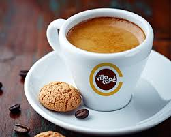
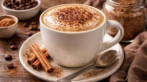
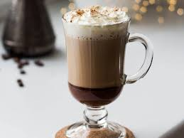
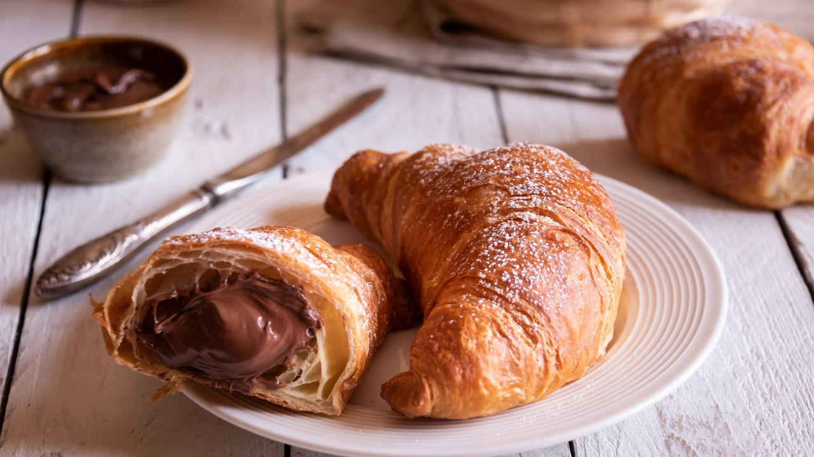
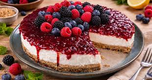

Café-Aroma

O aroma perfeito para começar o seu dia! Venha nos visitar e experimentar nosso delicioso cardápio!
Endereço:
Rua das Acácias, 245 – Centro Cerquilho, SP – CEP 18520-000
Horário de funcionamento:
Segunda a Sexta: 7h às 20h Sábados: 8h às 22h Domingos: 8h às 18h
Cardápio
- Café intenso e encorpado, preparado com grãos selecionados e servido em uma pequena dose para destacar todo o aroma e sabor.
- Preço: R$7,00
- Combinação equilibrada de café espresso, leite vaporizado e espuma cremosa, finalizada com um toque de canela ou chocolate em pó.
- Preço: R$12,00
- Bebida que une espresso, leite vaporizado e chocolate, criando um sabor suave e levemente adocicado.
- Preço: R$14,00
- Massa folhada amanteigada, assada diariamente para garantir textura crocante por fora e macia por dentro.
- Preço: R$10,00
- Sobremesa cremosa à base de cream cheese sobre uma base crocante de biscoito, coberta com calda de frutas vermelhas.
- Preço: R$15,00
- Brownie de chocolate com casquinha crocante e interior macio, preparado com ingredientes selecionados para um sabor marcante.
- Preço: R$8,00
Espresso

Cappuccino

Mocha

Croissant

Cheesecake

Brownie

Sobre nós
Bem-vindo ao Café Aroma, um lugar criado para quem aprecia bons cafés, deliciosos acompanhamentos e momentos especiais. Desde 2018, nossa missão é oferecer uma experiência acolhedora, combinando grãos selecionados, receitas artesanais e um ambiente confortável para reunir amigos, trabalhar ou simplesmente relaxar.
Acreditamos que cada xícara de café conta uma história. Por isso, selecionamos cuidadosamente nossos ingredientes e preparamos cada bebida com dedicação, garantindo qualidade e sabor em cada detalhe. Além dos cafés especiais, oferecemos uma variedade de doces e salgados produzidos diariamente para tornar sua visita ainda mais agradável.
No Café Aroma, mais do que servir bebidas e alimentos, buscamos criar um espaço onde as pessoas possam desacelerar, conversar e aproveitar os pequenos momentos que tornam o dia melhor. Seja para um café rápido pela manhã ou para uma tarde tranquila, estamos sempre prontos para recebê-lo com um sorriso e um aroma irresistível de café fresco.
Nossos Diferenciais
No Café Aroma, buscamos oferecer muito mais do que um simples café. Conheça alguns dos nossos diferenciais:
- Trabalhamos com grãos cuidadosamente selecionados para garantir sabor, aroma e qualidade em cada xícara.
- Nossos doces são preparados com ingredientes de qualidade e receitas que valorizam o sabor caseiro.
- Internet rápida e gratuita para quem deseja estudar, trabalhar ou navegar enquanto aproveita o café.
- Espaço acolhedor, com decoração moderna e mesas confortáveis para momentos de lazer ou produtividade.
- Priorizamos ingredientes frescos e de alta qualidade em todas as nossas bebidas e alimentos.
- Nossa equipe está sempre pronta para receber cada cliente com simpatia e dedicação.
- Seja para um café da manhã, uma pausa durante o trabalho ou um encontro com amigos, o Café Aroma é o lugar ideal.
Cafés Especiais
Doces Artesanais
Wi-Fi Gratuito
Ambiente Confortável
Ingredientes Selecionados
Atendimento Atencioso
Perfeito para Qualquer Momento
Mais do que uma cafeteria, um espaço para criar boas lembranças e aproveitar momentos especiais.
Avaliação dos nossos clientes
Ana Silva
- "Ambiente muito agradável e aconchegante. O cappuccino é simplesmente maravilhoso e os atendentes são muito simpáticos!"
Carlos Oliveira
- "Ótimo lugar para estudar e trabalhar. O Wi-Fi funciona muito bem e o café sempre chega quentinho e saboroso."
Mariana Costa
- "Os doces artesanais são deliciosos! Experimentei o cheesecake e fiquei encantada. Com certeza voltarei mais vezes."
Lucas Pereira
- "O melhor espresso que já tomei na região. Dá para perceber a qualidade dos grãos e o cuidado no preparo."
Fernanda Souza
- "Adorei a experiência! Ambiente confortável, atendimento excelente e um brownie incrível para acompanhar o café."
Contato
Entre em contato conosco e visite nossas redes sociais